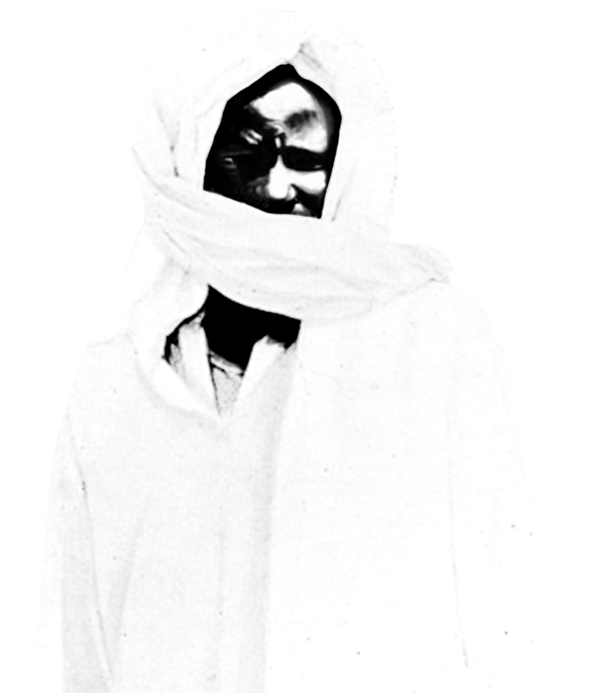
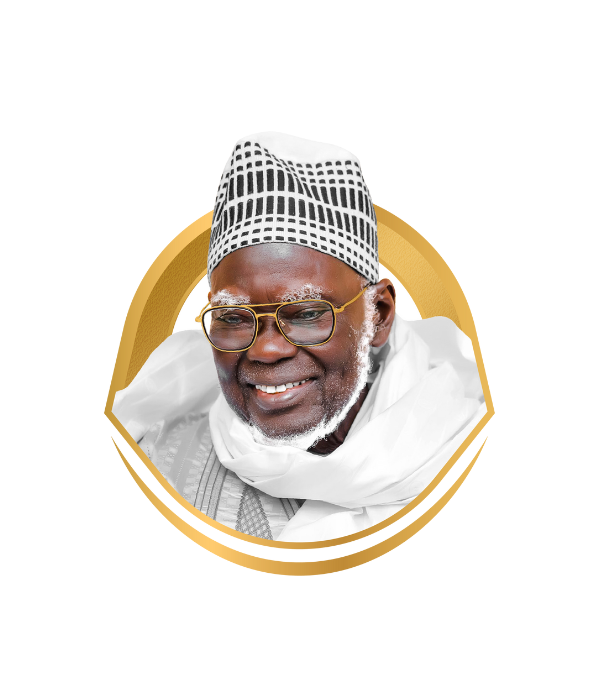
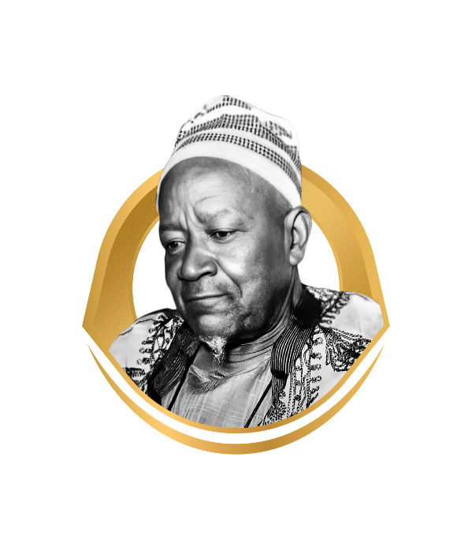
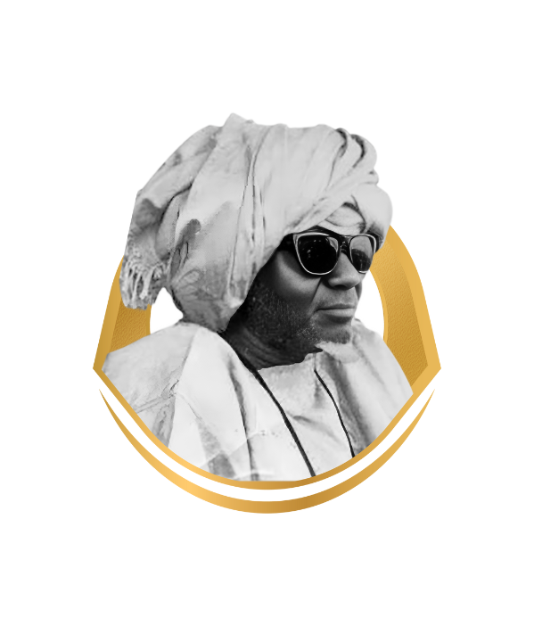
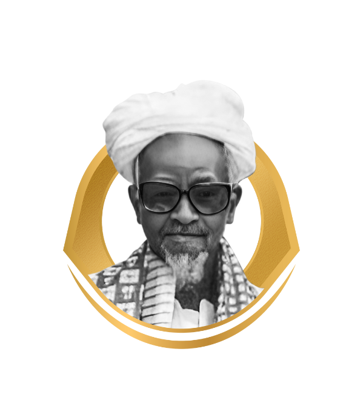
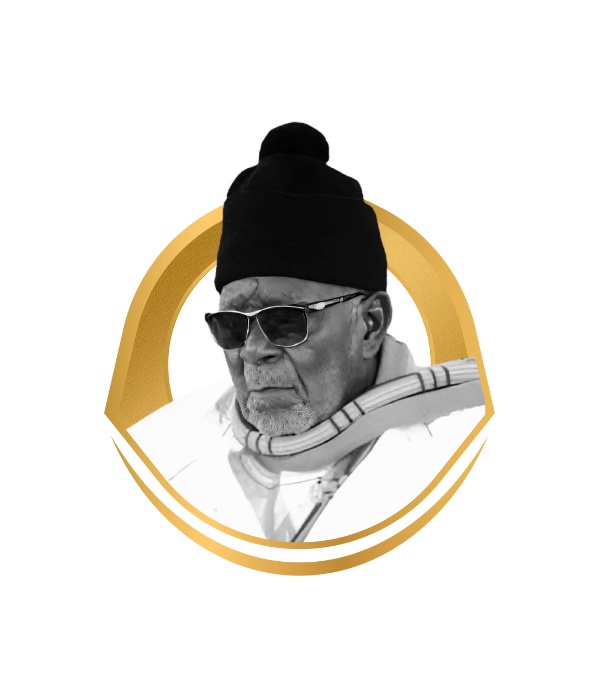
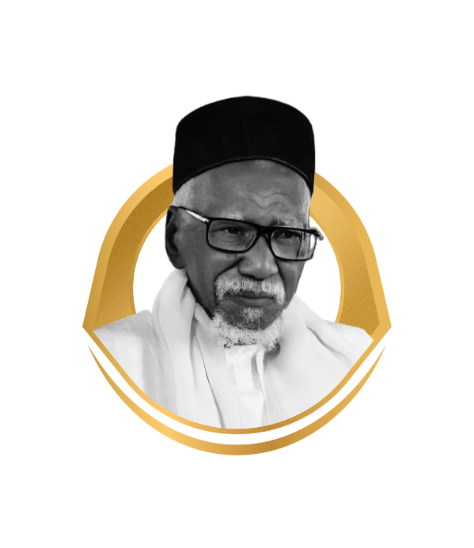

Les Khalifes Généraux des Mourides
De 1927 à aujourd'hui - L'héritage spirituel de Serigne Touba

Serigne Touba
Le guide spirituel des mourides (1853-1927)

Serigne Mountakha Bassirou Mbacké
8ème Khalife général des mourides (depuis 2018)
Cheikh Mouhammadou Moustapha Mbacké
1er Khalife général (1927-1945)

Cheikh Mouhamadou Fadilou Mbacké
2ème Khalife général (1945-1968)

Cheikh Abdoul Ahad Mbacké
3ème Khalife général (1968-1989)

Cheikh Abdou Khadr Mbacké
4ème Khalife général (1989-1990)
Cheikh Saliou Mbacké
5ème Khalife général (1990-2007)

Mouhammadou Lamine Bara Mbacké
6ème Khalife général (2007-2010)

Serigne Sidy Mokhtar Mbacké
7ème Khalife général (2010-2018)